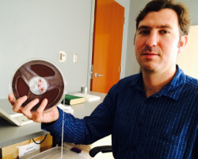

About Me
I am an Audio Production Specialist within the Digital Collections and Curation Department at Duke Libraries. This means that I convert rare and historic analog recordings into a digital format to be archived and made available to researchers. While I also work with video, manuscripts, maps, and all kinds of other items, my passion is for sound and all of the ways it can be captured, altered, and shared. I truly believe that "obsolete" technologies have their own strengths and charms, and do not always have to be discarded when a new technology comes along.
I have also been active as a performing and recording musician in the Triangle for the past 20 years. Currently, I play various stringed and keyboard instruments in the bands Dreamless, SNAKE, and the Blood Jar Creepers. I recently contributed bass guitar to the album Genericana by Elephant Micah. I also have a solo project called Northgate Syndicate where I bring together my interests in experimental and vernacular music from around the world.
I am currently enrolled in the UNC Coding Bootcamp. My future plans are to continue learning about web development and exploring the ways that I might be able to merge my new skills with my interests in art, music, and audio technology.